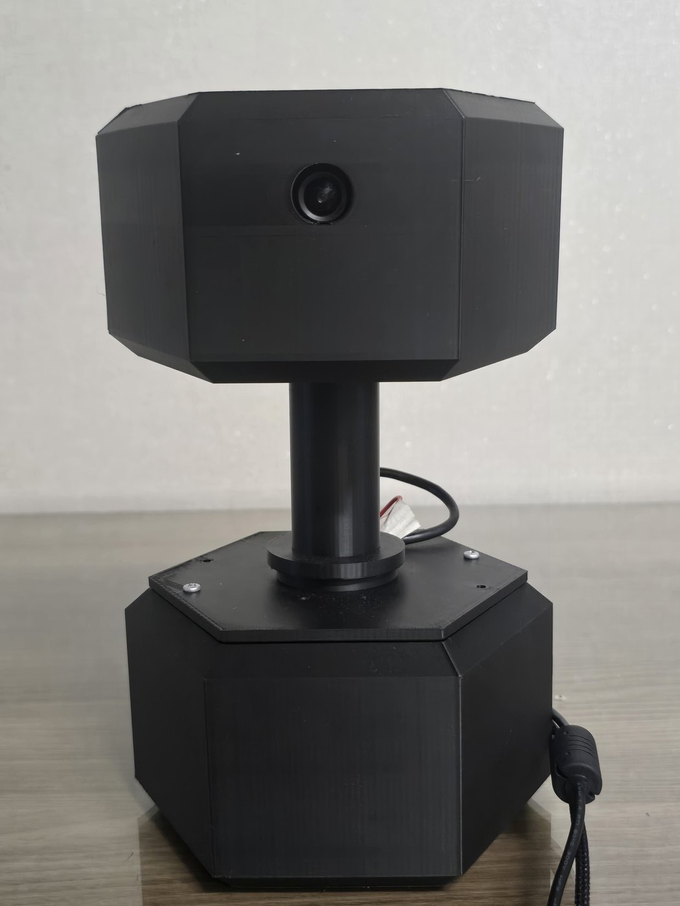

Arduino UNO Q 헬스 코치 로봇
카메라로 자세를 보고 운동 횟수를 세고, PTZ 짐벌로 사람을 따라가며, 휴대폰 웹앱으로 결과를 보여 주는 로봇입니다. NPU가 없는 Arduino UNO Q(Qualcomm QRB2210, Cortex-A53 4코어) 한 대에서 이 세 가지를 컨테이너 하나, 프로세스 하나로 돌렸습니다.

모두 웹앱 화면을 녹화한 것이고 배속하지 않았습니다.
구조
측정
| 항목 | 값 | 비고 |
|---|---|---|
| 포즈 추론 | 약 11.4 FPS | 시청자 없을 때. 추론이 병목 |
| 루프 지연 | 약 90 ms | 프레임 수집부터 인코딩까지 직렬 |
| 시청자 1명 / 2명 | 약 10 / 8 FPS | 전송 스레드가 늘며 경합 |
| CPU 사용률 | 약 83% | 4코어 모두 최대 클럭 |
| 온도 | 51~73 °C | 스로틀링 전 범위 |
2026-09-08 재측정에서도 e2e 11.3 FPS(10.5~11.6)로 비슷했습니다. 측정 횟수를 따로 기록하지 않아 "약"을 붙였습니다.
문제와 해결
시청자가 늘면 FPS가 떨어졌다
휴대폰과 PC가 동시에 보면 약 8 FPS까지 내려갔습니다. 파이썬 스레드가 GIL을 두고 경합하는 것과 원격 접속(Tailscale) 암호화 부담이 겹친 것으로 분석했습니다. 이 CPU는 INT8 내적 명령(asimddp)이 없어서, FPS를 크게 올릴 방법은 NPU·DSP 위임뿐이라는 것도 정리해 두었습니다.
보정 중 짐벌이 급회전해 하우징이 부서졌다
서보 영점 오프셋의 부호 비트를 bit11이 아니라 bit15에 넣었고, 토크가 켜진 상태에서 오프셋을 바꾼 것이 겹쳤습니다. LeRobot의 Feetech 레지스터 표와 대조해 원인을 찾았습니다. 부호 비트를 인자로 받게 고치고, 토크가 켜져 있으면 보정 함수가 예외로 멈추도록 했습니다. +100 같은 작은 값으로 먼저 확인하고 늘려 간 덕분에 원인을 빨리 좁힐 수 있었습니다.
한계
- 횟수 판정 임계각은 현장 조정이 더 필요합니다.
- CPU 여유가 약 17%뿐이라 기능을 더 얹기 어렵습니다.
사용 기술
Arduino UNO Q (QRB2210), MoveNet Thunder INT8, LiteRT, OpenCV, ST3215 버스 서보, Docker, Tailscale. 포즈 모델은 UNO Q Edge AI Lines에서 실측해 고른 것입니다.